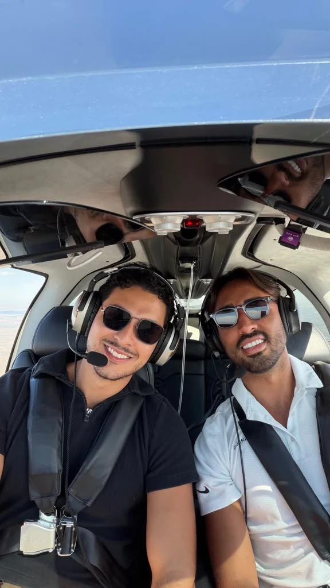
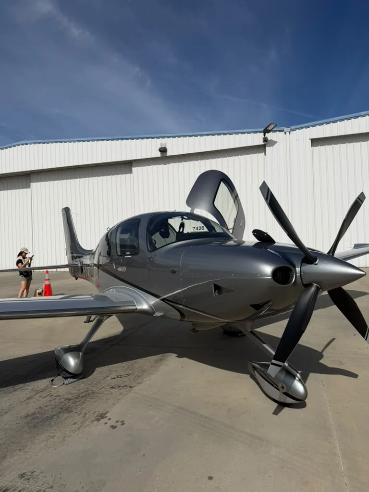
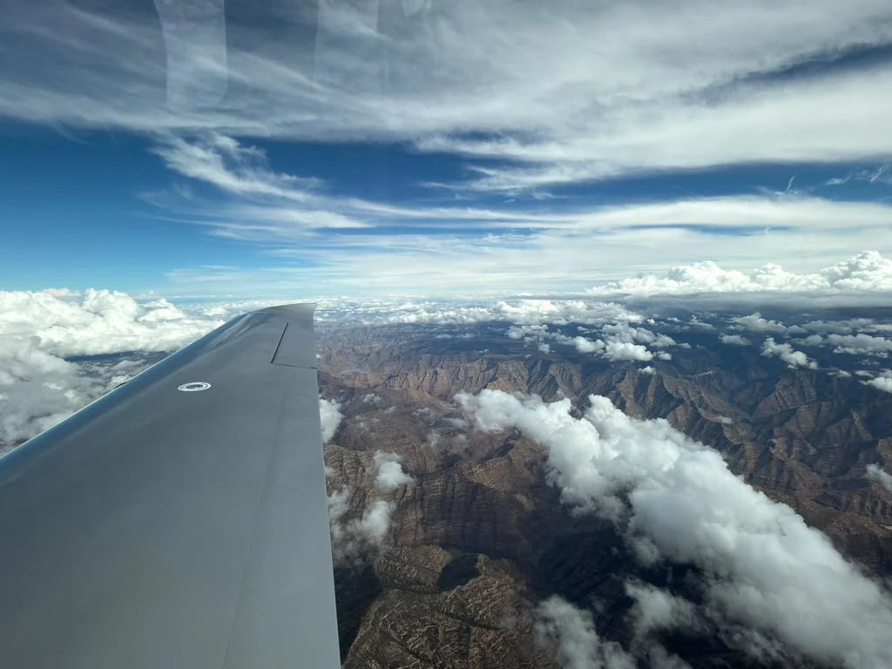
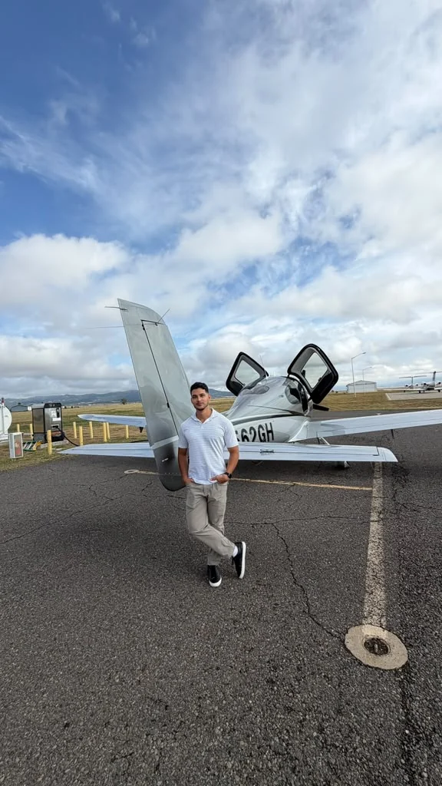

01
Aviation & Flight Training
Flying is both a technical interest and a personal one. I enjoy general aviation, flight training, cockpit procedures and seeing aerodynamic, navigation and weather decisions play out in the real operating environment.



